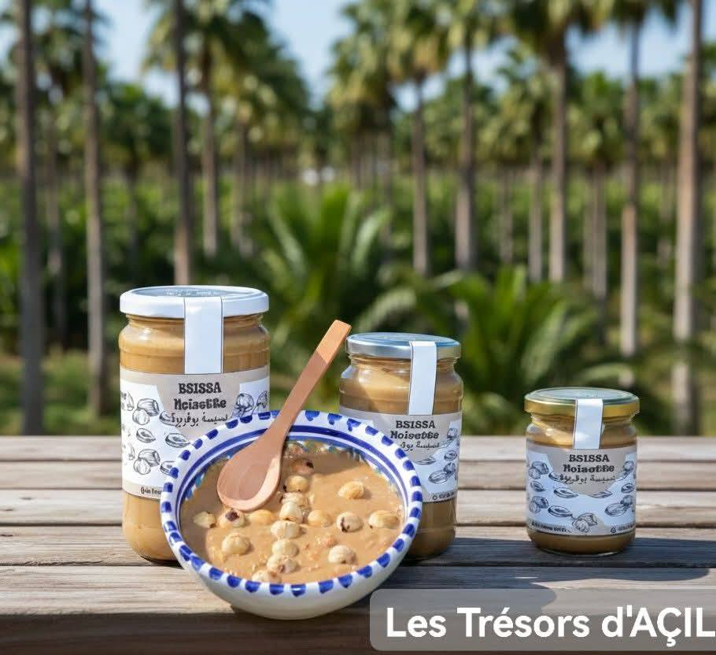
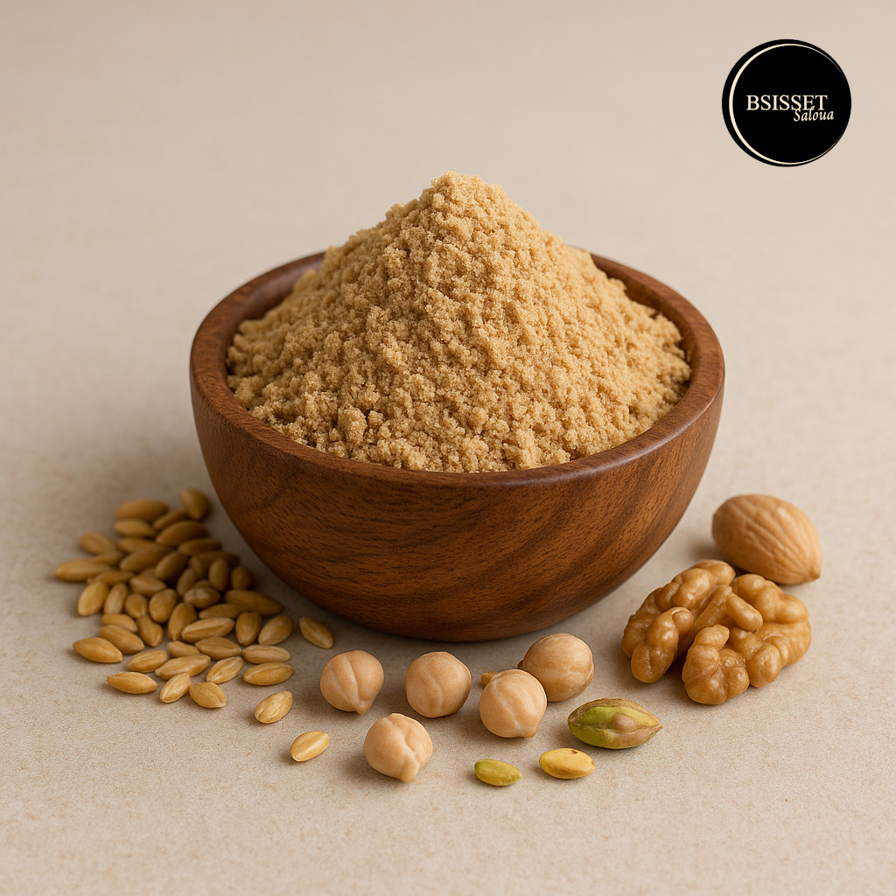
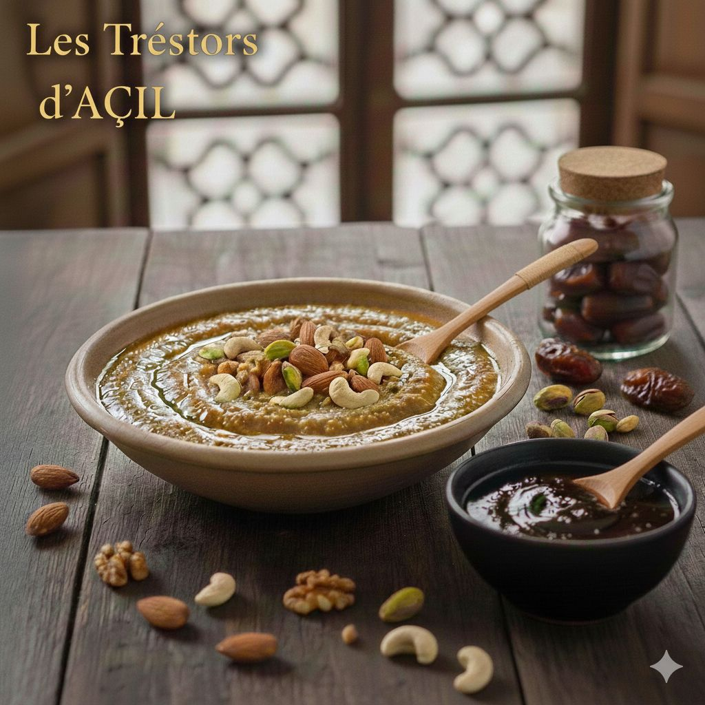
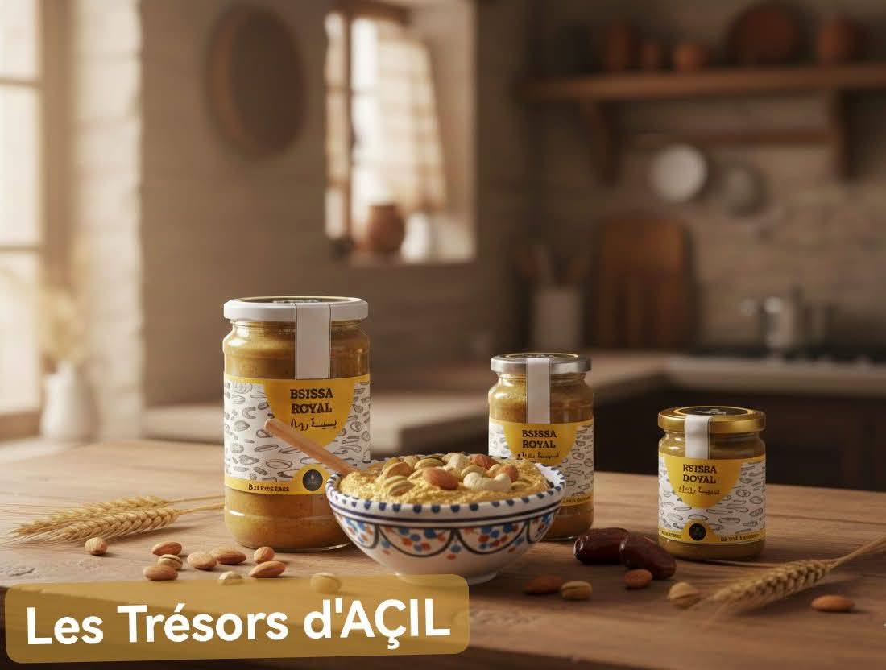
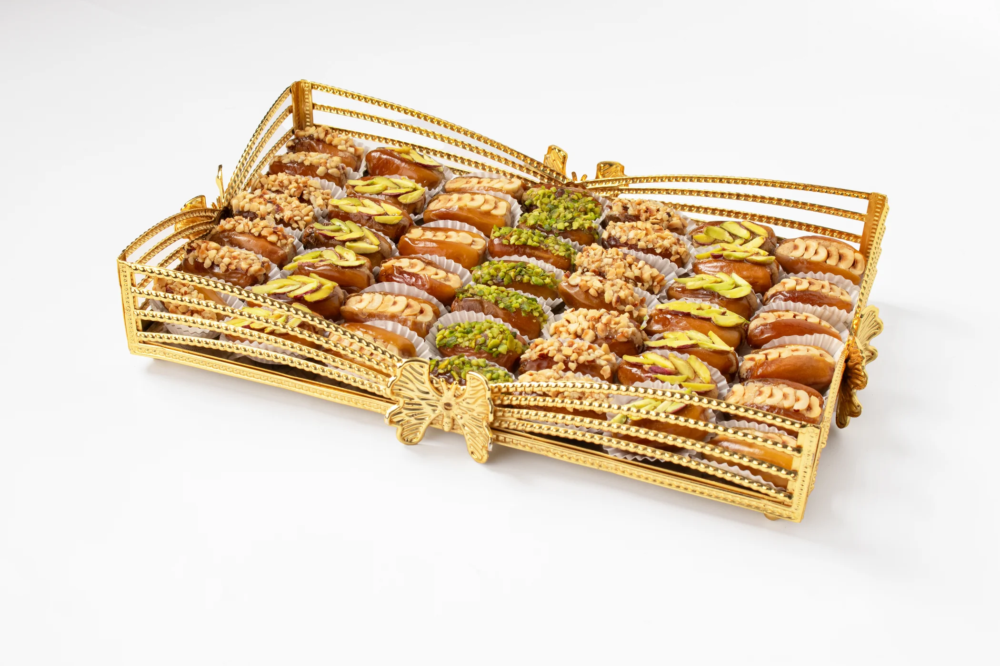
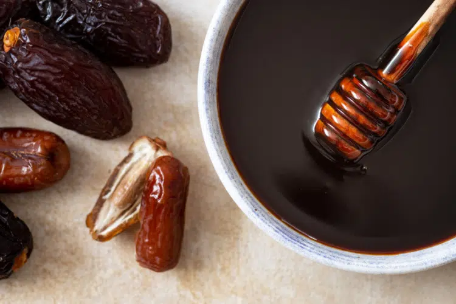
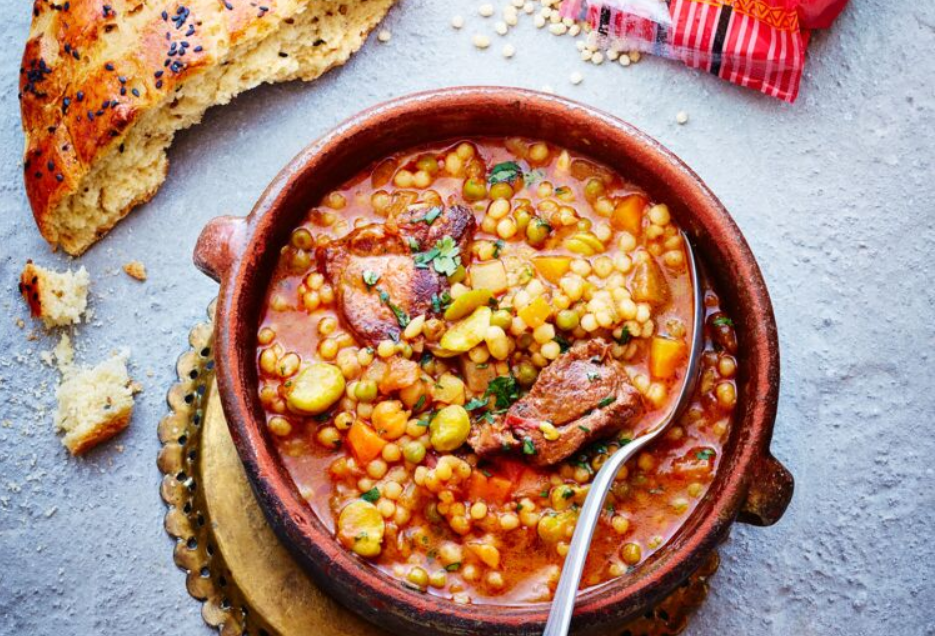
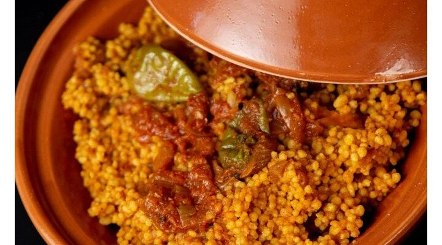
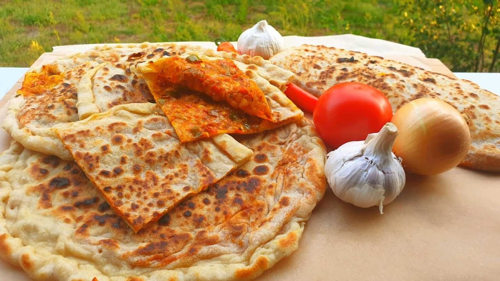
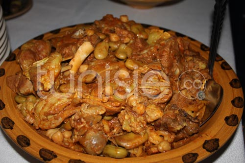

Djéridna
Bienvenue au pays du soleil couchant, là où le désert s’incline devant l’oasis.
La gastronomie du Djérid est un véritable voyage sensoriel
vous n’êtes plus un visiteur... vous êtes l’invité de Djéridna.
Nous avons créé cet espace pour préserver et partager ce patrimoine unique. Que vous soyez ici
pour
explorer nos canyons de montagne, découvrir nos savoir-faire artisanaux ou simplement goûter à la
quiétude de nos médinas.
-
La Bsissa : Le Trésor Nutritionnel
- Variétés : On la trouve aux noisettes, aux pistaches ou même au chocolat pour une touche moderne.
- Consommation : Mélangée à de l'huile d'olive et parfois du miel ou du Robb, elle constitue un repas complet et énergétique.
-
La Datte : La Reine de l'Oasis
- Le Robb : Un sirop de dattes épais et sombre, utilisé comme édulcorant naturel ou consommé au petit-déjeuner.
- Dattes fourrées : Souvent garnies de pâte d'amande ou de noix pour les grandes occasions.
-
Plats Emblématiques
- Mtabga : Souvent appelée "pizza berbère", c'est une galette farcie d'un mélange d'oignons, de graisse d'agneau, de tomates et d'épices.
- Chakhchoukha : Une spécialité de fines feuilles de pâte émiettées, arrosées d'une sauce rouge pimentée à la viande et aux pois chiches.
- Barkoukech :C'est un plat "complet" qui était historiquement préparé pour donner de la force aux travailleurs des oasis.
la Bsissa du Djérid est une préparation ancestrale à base de céréales grillées et d'épices. Elle se décline en versions gourmandes :




La datte, en particulier la Deglet Nour, est l'ingrédient central. Elle ne se déguste pas seulement seule, mais s'intègre dans de nombreuses préparations :





